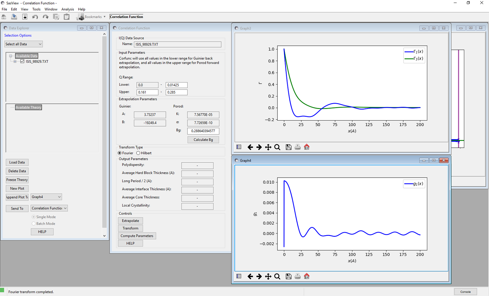
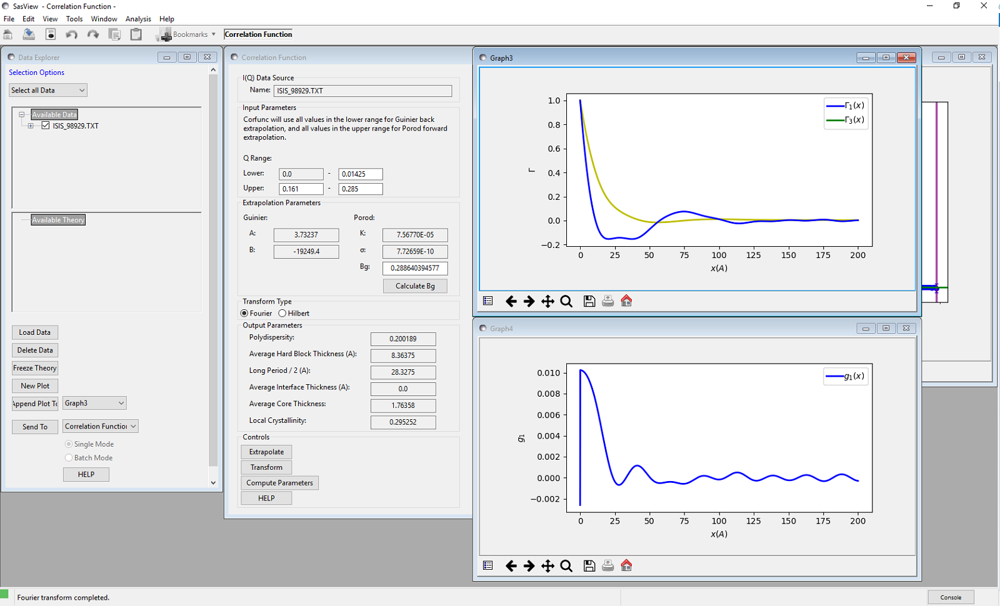

Correlation Function Analysis
Description
This currently performs correlation function analysis on SAXS/SANS data, but in the the future is also planned to generate model-independent volume fraction profiles from the SANS from adsorbed polymer/surfactant layers. The two types of analyses differ in the mathematical transform that is applied to the data (Fourier vs Hilbert). However, both functions are returned in real space.
A correlation function may be interpreted in terms of an imaginary rod moving through the structure of the material. Γ(x) is the probability that a rod of length x has equal electron/neutron scattering length density at either end. Hence a frequently occurring spacing within a structure will manifest itself as a peak in Γ(x). SasView will return both the one-dimensional ( Γ1(x) ) and three-dimensional ( Γ3(x) ) correlation functions, the difference being that the former is only averaged in the plane of the scattering vector.
A volume fraction profile \(\Phi\)(z) describes how the density of polymer segments/surfactant molecules varies with distance, z, normal to an (assumed locally flat) interface. The form of \(\Phi\)(z) can provide information about the arrangement of polymer/surfactant molecules at the interface. The width of the profile provides measures of the layer thickness, and the area under the profile is related to the amount of material that is adsorbed.
Both analyses are performed in 3 stages:
- Extrapolation of the scattering curve to \(q = 0\) and toward \(q = \infty\)
- Smoothed merging of the two extrapolations into the original data
- Fourier / Hilbert Transform of the smoothed data to give the correlation function or volume fraction profile, respectively
- (Optional) Interpretation of Γ1(x) assuming the sample conforms to an ideal lamellar morphology
Extrapolation
To \(q = 0\)
The data are extrapolated to q = 0 by fitting a Guinier function to the data points in the low-q range.
The equation used is:
Where the parameter \(B\) is related to the effective radius-of-gyration of a spherical object having the same small-angle scattering in this region.
Note that as q tends to zero this function tends to a limiting value and is therefore less appropriate for use in systems where the form factor does not do likewise. However, because of the transform, the correlation functions are most affected by the Guinier back-extrapolation at large values of x where the impact on any extrapolated parameters will be least significant.
To \(q = \infty\)
The data are extrapolated towards q = \(\infty\) by fitting a Porod model to the data points in the high-q range and then computing the extrapolation to 100 times the maximum q value in the experimental dataset. This should be more than sufficient to ensure that on transformation any truncation artefacts introduced are at such small values of x that they can be safely ignored.
The equation used is:
Where \(Bg\) is the background, \(K\) is the Porod constant, and \(\sigma\) (which must be > 0) describes the width of the electron/neutron scattering length density profile at the interface between the crystalline and amorphous regions as shown below.

Smoothing
The extrapolated data set consists of the Guinier back-extrapolation from q ~ 0 up to the lowest q value in the original data, then the original scattering data, and then the Porod tail-fit beyond this. The joins between the original data and the Guinier/Porod extrapolations are smoothed using the algorithm below to try and avoid the formation of truncation ripples in the transformed data:
Functions \(f(x_i)\) and \(g(x_i)\) where \(x_i \in \left\{ {x_1, x_2, ..., x_n} \right\}\), are smoothed over the range \([a, b]\) to produce \(y(x_i)\), by the following equations:
where:
Transformation
Fourier
If “Fourier” is selected for the transform type, SasView will perform a discrete cosine transform on the extrapolated data in order to calculate the 1D correlation function as:
where Q* is the Scattering (also called Porod) Invariant.
The following algorithm is applied:
The 3D correlation function is calculated as:
Note
It is always advisable to inspect Γ1(x) and Γ3(x) for artefacts arising from the extrapolation and transformation processes:
- do they tend to zero as x tends to \(\infty\)?
- do they smoothly curve onto the ordinate at x = 0? (if not check the value of \(\sigma\) is sensible)
- are there ripples at x values corresponding to (2 \(\pi\) over) the two q values at which the extrapolated and experimental data are merged?
- are there any artefacts at x values corresponding to 2 \(\pi\) / qmax in the experimental data?
- and lastly, do the significant features/peaks in the correlation functions actually correspond to anticpated spacings in the sample?!!!
Finally, the program calculates the interface distribution function (IDF) g1(x) as the discrete cosine transform of:
The IDF is proportional to the second derivative of Γ1(x) and represents a superposition of thickness distributions from all the contributing lamellae.
Hilbert
If “Hilbert” is selected for the transform type, the analysis will perform a Hilbert transform on the extrapolated data in order to calculate the Volume Fraction Profile.
Note
The Hilbert transform functionality is not yet implemented in SasView.
Interpretation
Correlation Function
Once the correlation functions have been calculated SasView can be asked to try and interpret Γ1(x) in terms of an ideal lamellar morphology as shown below.

The structural parameters extracted are:
- Long Period \(= L_p\)
- Average Hard Block Thickness \(= L_c\)
- Average Core Thickness \(= D_0\)
- Average Interface Thickness \(= D_{tr}\)
- Polydispersity \(= \Gamma_{\mathrm{min}}/\Gamma_{\mathrm{max}}\)
- Local Crystallinity \(= L_c/L_p\)
Warning
If the sample does not possess lamellar morphology then “Compute Parameters” will return garbage!
Volume Fraction Profile
SasView does not provide any automatic interpretation of volume fraction profiles in the same way that it does for correlation functions. However, a number of structural parameters are obtainable by other means:
- Surface Coverage \(=\theta\)
- Anchor Separation \(= D\)
- Bound Fraction \(= <p>\)
- Second Moment \(= \sigma\)
- Maximum Extent \(= \delta_{\mathrm{h}}\)
- Adsorbed Amount \(= \Gamma\)


The reader is directed to the references for information on these parameters.
References
Correlation Function
Strobl, G. R.; Schneider, M. J. Polym. Sci. (1980), 18, 1343-1359
Koberstein, J.; Stein R. J. Polym. Sci. Phys. Ed. (1983), 21, 2181-2200
Baltá Calleja, F. J.; Vonk, C. G. X-ray Scattering of Synthetic Poylmers, Elsevier. Amsterdam (1989), 247-251
Baltá Calleja, F. J.; Vonk, C. G. X-ray Scattering of Synthetic Poylmers, Elsevier. Amsterdam (1989), 257-261
Baltá Calleja, F. J.; Vonk, C. G. X-ray Scattering of Synthetic Poylmers, Elsevier. Amsterdam (1989), 260-270
Göschel, U.; Urban, G. Polymer (1995), 36, 3633-3639
Stribeck, N. X-Ray Scattering of Soft Matter, Springer. Berlin (2007), 138-161
Fibre Diffraction Review References (PDF format)
Volume Fraction Profile
Washington, C.; King, S. M. J. Phys. Chem., (1996), 100, 7603-7609
Cosgrove, T.; King, S. M.; Griffiths, P. C. Colloid-Polymer Interactions: From Fundamentals to Practice, Wiley. New York (1999), 193-204
King, S. M.; Griffiths, P. C.; Cosgrove, T. Applications of Neutron Scattering to Soft Condensed Matter, Gordon & Breach. Amsterdam (2000), 77-105
King, S.; Griffiths, P.; Hone, J.; Cosgrove, T. Macromol. Symp. (2002), 190, 33-42
Usage
Upon sending data for correlation function analysis, it will be plotted (minus the background value), along with a red bar indicating the upper end of the low-Q range (used for Guinier back-extrapolation), and 2 purple bars indicating the range to be used for Porod forward-extrapolation. These bars may be moved by grabbing and dragging, or by entering appropriate values in the Q range input boxes.
Once the Q ranges have been set, click the “Calculate Bg” button to determine the background level. Alternatively, enter your own value into the box. If the box turns yellow this indicates that background subtraction has created some negative intensities. This may still be fine provided the peak intensity is very much greater than the background level. The important point is that the extrapolated dataset must approach zero at high-q.
Now click the “Extrapolate” button to extrapolate the data. The graph window will update to show the extrapolated data, and the values of the parameters used for the Guinier and Porod extrapolations will appear in the “Extrapolation Parameters” section of the SasView GUI.
Now select which type of transform you would like to perform, using the radio buttons:
- Fourier: to perform a Fourier Transform to calculate the correlation functions
- Hilbert: to perform a Hilbert Transform to calculate the volume fraction profile
and click the “Transform” button to perform the selected transform and plot the results.

If a Fourier Transform was performed, the “Compute Parameters” button can now be clicked to interpret the correlation function as described earlier. The parameters will appear in the “Output Parameters” section of the SasView GUI.

Note
This help document was last changed by Steve King, 28Sep2017